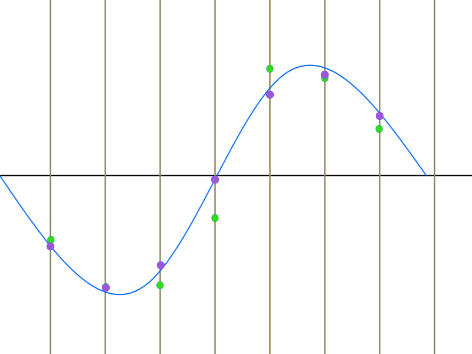

f(x) = 🎵
A journey through music & spreadsheets
Speaker
Air vibration
Perception
A-440 tuning fork = 440hz
f(t) = sin(440t × 2π)
wave[i] = Math.sin(i * 440 * Math.PI * 2 / 44100)
Some binary format love
Excel time!
📈
Original sample (theoretical)
Apply some sampling
Keep sampled values
Store the result
Scale sample using nearest interpolation
Locate nearest neighbor
Use result point at each tick
Error vs theoretical sample scaled
Scale sample using linear interpolation
Linear function between each point
Use result point at each tick
Error vs theoretical sample scaled

Nearest vs linear sampling
Excel time!
🎼